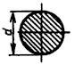
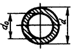

Расчет осей
Ось не передает вращающего момента, а воспринимает только поперечные нагрузки. Оси рассчитывают только на изгиб.

Рис. 1 Цилиндрическая сплошная ось (вал)

Рис. 2 Цилиндрическая полая ось
Расчетные формулы:
для цилиндрических сплошных осей (рис. 1)
d = (Ми/0,1[σиз])^(1/3)
Ми = 0,1d3[σиз]
для цилиндрических полых осей (рис. 2)
| d4 – d40 | ||
| Ми = 0,1 | [σиз] | |
| d |
где МИ – изгибающий момент
Н-мм; [σ из] – допускаемое напряжение на изгиб, МПа (см. табл. Определение реакций опор и изгибающих моментов);
d и d0 – соответственно наружный и внутренний диаметры полой оси.